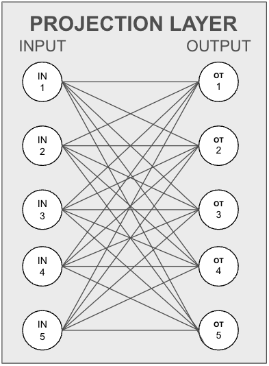
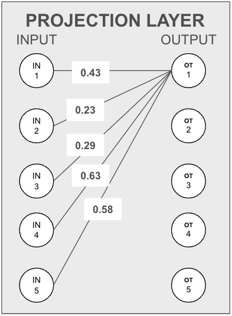
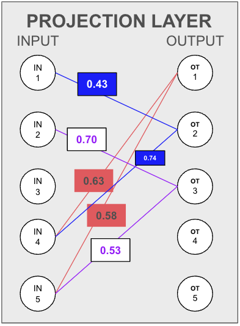

Hacking Embeddings
Unlocking the Power of Semantic Search: Optimizing Search with Dimensionality Reduction using Feature Selection
Semantic search is transforming how we find information, extracting the meaning and intent behind our queries. Unlike traditional text search, semantic search leverages high-dimensional representations created by transformer models, capturing the nuanced meanings of texts or images. However, these abstract and complex vectors come at a cost, being resource-intensive and challenging to interpret and control.
While fine-tuning models for specific tasks can help, we often find ourselves with more dimensions than necessary. Enter dimensionality reduction: a technique that can improve the search process by reducing the number of dimensions, making it faster without sacrificing essential information.
In this blog, we’ll talk about a feature selection technique for models with a linear projection layer using the CLIP example to reduce the dimensionality of vectors generated by transformer models. This method identifies important features based on the weights of the projection layer.
Understanding the Method
Our approach focuses on retaining unique information fed through the linear projection layer while dropping features (final features after the projection layer) with redundant information. Let’s break down how this works using an example of a projection layer. Here, the input layer takes values from the model’s last layer, and the output layer projects these into a specific vector space.

To illustrate, consider five input neurons and an output neuron. The information each input neuron carries to the output neuron is proportional to the weight between them.

Assumption One: Equal Information Distribution
We assume that every input neuron has the same level of information, making the amount transferred to the output neuron directly proportional to their connecting weights.
Simplified Example
Imagine marking the highest two weights for three output neurons to decide which neuron to drop. If output neuron 1 (OT1) receives most information from input neurons 4 and 5, and output neuron 2 (OT2) also heavily relies on input neurons 1 and 4, while output neuron 3 (OT3) relies on input neurons 2 and 5, we can infer redundancy. Since OT1’s information is already captured by OT2 and OT3, we can drop OT1.

Dropping Score Mechanism
To automate this process, we define a dropping score. Initially, the drop score for a target output feature is the sum of common input features between the target and every other output feature. As we drop features, we adjust the scores to ensure minimal information loss.
Implementation with OpenCLIP
Let’s implement this technique using the OpenCLIP framework, focusing on the visual projection layer and considering the same final features from the text projection layers.
Importing the Model and State Dictionary
from PIL import Image
import open_clip
import numpy as np
model, _, preprocess = open_clip.create_model_and_transforms('ViT-B-32', pretrained='laion2b_s34b_b79k', cache_dir="directory Address to store the model")
model_state_dict = model.state_dict()Setting Parameters
# Consider top k (by weights) input features for calculating shared information
top_k_weights = 512
# Here we are considering all input features, which means we will be considering every dimension for calculation how many output features shares any input feature
drop_number = 100
# Number of features we want to dropFinding Top-K weights
# Find top-k weight input neurons for each output feature
high_weight = []
for i in range(len(model_state_dict["visual.proj"].T)):
weights = model_state_dict["visual.proj"].T[i].detach().numpy()
max_index = np.argsort(np.abs(weights))[:top_k_weights]
high_weight.append(max_index)Creating Heatmap and Dropping Score
Now we will create a heatmap of intersections, where heat_map[i,j] will give us the intersection between the (i)th and (j)th output features. Using this heatmap, we will assign an initial dropping score. The dropping score of the (i)th feature is the sum of all intersections (common input features) with other output features. The intersection with itself can be skipped as it is not needed.
# Create a heatmap of intersections between output features
heat_map = []
for i in high_weight:
set1 = set(i)
row_heat = []
for j in high_weight:
set2 = set(j)
# Calculate the intersection between input features
row_heat.append(len(set1.intersection(set2)))
heat_map.append(row_heat)
# Make a list of dropping score
dropping_score = []
for i in heat_map:
# take sum of all the intersection with others for ith feature
dropping_score.append(sum(i))Dropping Features
drop_index = []
# loop over the number of features we want to drop
for drops in range(drop_number):
# drop the feature with maximum dropping score
drop_index.append(np.argmax(dropping_score))
if dropping_score[drop_index[-1]] != 0: # Check if max drop_score is not zero, if zero then don't reduce features
# reduce the dropping score for other features by the number of intersection between the actual feature and the dropped feature
dropping_score = [a_i - b_i for a_i, b_i in zip(dropping_score, heat_map[drop_index[-1]])]
dropping_score[drop_index[-1]] = -1000
# Assign -1000 (high negative value) for dropped feature
else:
breakSelecting Final Features
# In final index consider only the features having final positive dropping score, thereby dropping -1000 scored dropped features
final_index = [i for i, values in enumerate(dropping_score) if values > 0]
# Final index are the indices of features that will be the final selected features after dropping featuresResults and Performance
We tested the ViT-B-32 CLIP model in both original and reduced formats across various datasets, thanks to LAION AI’s CLIP Benchmark repository.
Zeroshot Classification
| Dataset | Modified Model (mean_per_class_recall) | Original Model (mean_per_class_recall) | Recall Gain |
|---|---|---|---|
| wds/imagenetv2 | 0.5306 | 0.5595 | -2.89% |
| wds/vtab/caltech101 | 0.9005 | 0.8758 | 2.47% |
| wds/vtab/cifar10 | 0.8759 | 0.8983 | -2.24% |
| wds/vtab/cifar100 | 0.6436 | 0.642 | 0.16% |
Zeroshot Retrieval
| Dataset | Modified Model (Image Retrieval Recall@5) | Original Model (Image Retrieval Recall@5) | Recall Gain |
|---|---|---|---|
| wds/flickr8k | 0.8132 | 0.8046 | 0.86% |
| wds/flickr30k | 0.8426 | 0.8342 | 0.84% |
| wds/mscoco_captions | 0.5959 | 0.5598 | 3.61% |
| Dataset | Modified Model (Text Retrieval Recall@5) | Original Model (Text Retrieval Recall@5) | Recall Gain |
|---|---|---|---|
| wds/flickr8k | 0.916 | 0.914 | 0.20% |
| wds/flickr30k | 0.946 | 0.947 | -0.10% |
| wds/mscoco_captions | 0.7514 | 0.7504 | 0.10% |
Conclusion and Future Improvements
There are many different techniques for feature reduction and feature selection. The above method performs feature selection by considering the final weights of the linear projection layer. It uses these weights as an indication of how information provided as input to the projection layer is shared across the output features. Using this information, it attempts to eliminate features whose information can be preserved by retaining other sets of features.
Here, we assume two things: 1. There is an equal distribution of information across the input neurons of the projection layer. 2. All output neurons connected to an input neuron contain information from the input neuron in varying proportions.
The model has been benchmarked accordingly. From observations, the model performs better than the original model when it focuses only on major details. Further testing can be conducted by dropping different numbers of features and comparing the results.
There are additional improvements that can be made. For example, instead of just considering the intersection between input features for two output features, we can also consider the proportion of input information shared between two output features by comparing their weights. This would give us a metric to assess shared information and determine whether or not to drop a feature based on it.